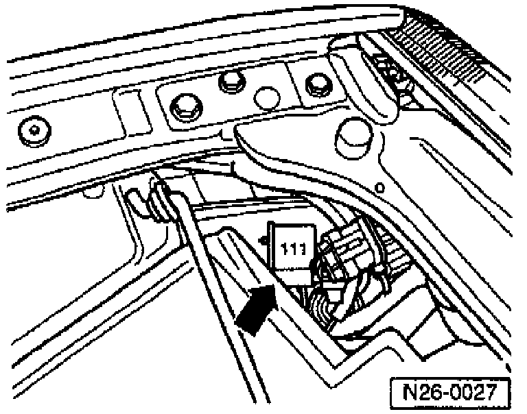

Air Injection Pump: Testing and Inspection
CHECKING SECONDARY AIR INJECTION PUMP MOTOR
REQUIREMENTS
^ Fuse on Secondary Air Injection (AIR) Pump Relay (J299) (arrow) OK.
^ Engine oil temperature 15 - 85°C (58 - 185°F).
PROCEDURE
- Disconnect pressure hose from AIR Inlet Valve, and route upwards.
- Start engine and run at idle.
NOTE: After approx. 20 seconds, the AIR Pump Motor (V101) should run for approx. 5 seconds, and secondary air must exit from pressure hose.
- If the AIR Pump Motor does NOT run:
- Stop engine.
- Disconnect 2-pin connector from AIR Pump Motor.
- Connect VAG 1527B voltage tester to the open connector using cables from VAG 1594 adapter kit.
- Start engine and run at idle.
- After approx. 20 seconds, LED must light for approx. 5 seconds.
- If LED lights (voltage supply OK):
- Replace Secondary Air Injection Pump Motor.
- If LED does NOT light:
- Reconnect 2-pin connector.
- Check activation of Secondary Air Injection Pump Motor. Refer to: How to Display and Read Diagnostic Codes / Output Diagnostic Test Mode.
- If Secondary Air Injection Pump Motor does NOT run during the electrical check:
- Check for malfunction of Secondary Air Injection Pump Relay. Refer to Wiring Diagrams.
- Check Diagnostic Trouble Code (DTC) Memory.